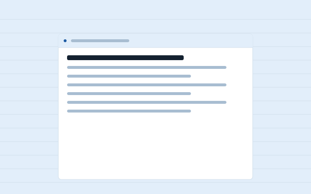
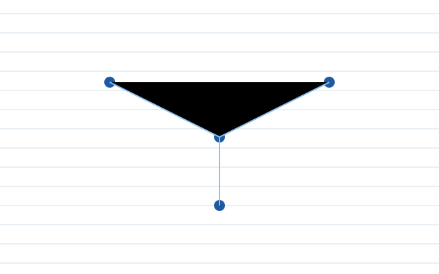
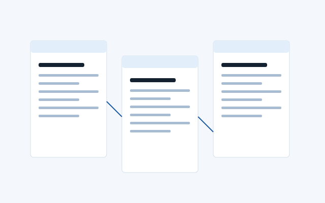
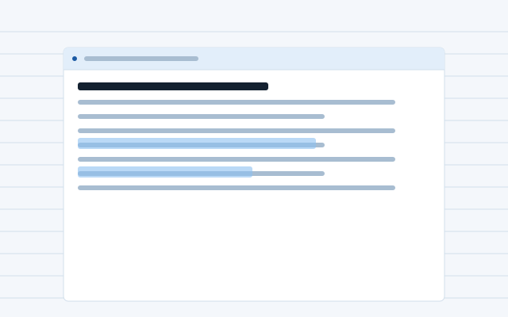

Plain files
A note is a Markdown file. Its name is the file name; its first line is the heading. Rename the file and every link to it follows.
All plans
Four features, a table of commands and the import dialog. If it is not here, Sheaf does not do it.

A note is a Markdown file. Its name is the file name; its first line is the heading. Rename the file and every link to it follows.

Type two opening brackets and start a name; Sheaf completes it from your notes or makes a new one. The other note lists what links to it.

The folder is mirrored to your other devices each time a note is written. Two devices on the free plan; any number on Personal and Team.

A Team folder is one folder several people write in. Each note shows who touched it last; there are no comments, permissions or roles.
Everything has a key. The command palette lists these and searches them by name.
| Command | Keys | Does |
|---|---|---|
| New note | Ctrl N | A blank file named by today's date until you give it a heading |
| Find | Ctrl K | Searches names first, then text |
| Link | [[ | Completes a note name at the cursor |
| Toggle list | Ctrl . | Hides the left pane so the note has the window |
| Open folder | Ctrl O | Shows the notes folder in your file manager |
Sheaf reads a folder of Markdown or plain text files as it is. If your notes are in another app, export them to a folder first, then point Sheaf at it.